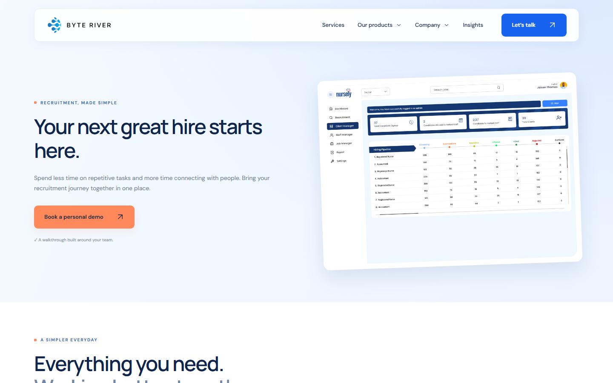

Benagon · ByteRiver Group
Candidate management and connected hiring workflows, built to spend less time on repetitive recruitment tasks and more time connecting with people. A sibling product to 20X — same company, same remote React & TypeScript team Samson shipped on.
This is an offline summary, not a live mirror — RecruitBee is built and hosted by Benagon / ByteRiver Group.

Centralises candidate details in one accessible workspace instead of scattered spreadsheets and inboxes.
Reduces administrative overhead while keeping the hiring team aligned on where every candidate stands.
Simplifies the daily work of recruiters across different teams and work environments.